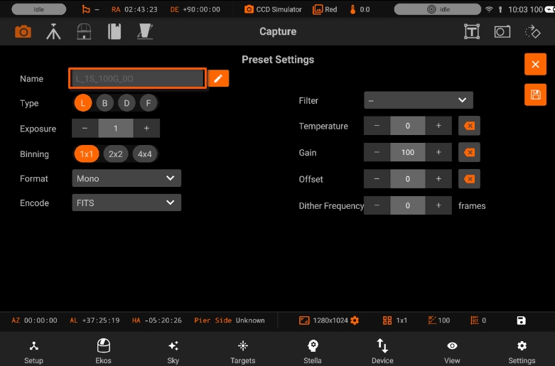
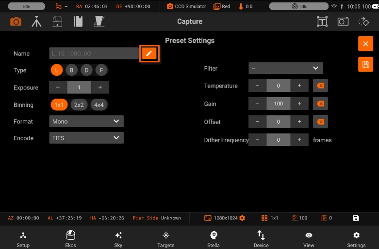
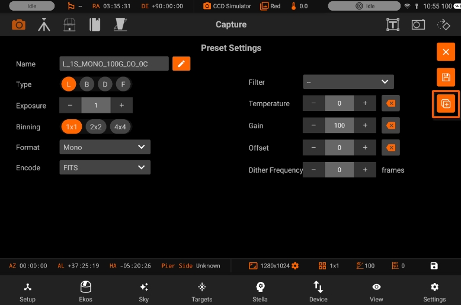

Presets
A preset is a collection of settings for a single capture job. These settings are applied to each capture job, while the capture settings are applied globally to all jobs.
When creating a new preset, the preset label is automatically generated based on the selected settings (e.g., exposure time, binning, filter). This helps you easily identify presets in the future.

To customize the preset label generation, tap the "Edit" icon next to the preset name. You can modify the label format to suit your preferences.


When you edit a preset, you can also duplicate the Preset. Duplicating a preset can be handy when you need to only alter one or two fields while keeping the rest the same. To duplicate a preset, tap on the duplication icon. Duplicate preset contains "(1)" after the name.

To add a new Capture Preset, tap the + icon.

Preset Editor contains the following fields:
- Preset name: Name of the preset.
- Frame Type: Specify the type of desired camera frame. Options are Light, Dark, Bias, and Flat frames.
- Exposure: Specify exposure duration in seconds.
- Binning: Specify horizontal (X) and vertical (Y) binning.
- Format: Specify capture save format (FITS, XISF, or Native when available)
- Encoding: For DSLR cameras, you can an additional option to save in Native format (e.g. RAW or JPEG).
- Filter: Specify desired filter.
- Temperature: Set the desired temperature, if your camera is equipped with a cooler. Check the option to force temperature setting before any capture. Capture process is only started after measured temperature is within requested temperature tolerance
- Gain: Specify the value of gain. Leaving it to -- would not change the current gain set in the camera
- ISO: For DSLR cameras, specify the ISO value.
- Offset: Specify the value added to avoid the reads to clip at value "zero". Leaving it to -- would not change the current offset set in the camera.